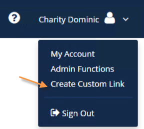
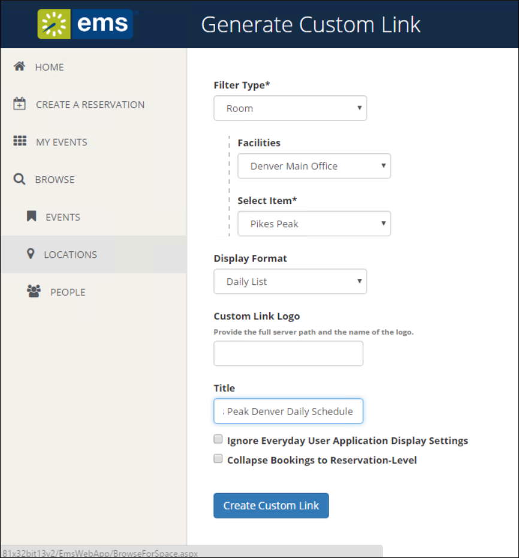
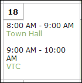

Customize EMS Web App
After you have installed the EMS Web App, you can customize many aspects of it. You can change the look and feel of the EMS Web App by inserting your own logo. Experienced web developers can also modify the system’s style sheet to change fonts and colors.
Important: Do not alter any of the EMS Web App web page files themselves. The maintenance agreement for EMS Web App extends to the original page content only.
This topic provides information on the following:
Customize the Logo
The logo that appears in the upper left corner of all pages within the EMS Web App comes from a file named LOGO.GIF found in the \EMSWebApp\Images folder of the web server. If you choose to have the system display a different logo, create a new file called CUSTOMLOGO in the same folder (any graphics file type, such as .gif, .png, etc. will suffice). If the system detects CUSTOMLOGO, the system will use that file rather than the default LOGO.GIF file. The advantage of creating the new file instead of simply replacing the LOGO.GIF file is that, in an upgrade to a new version of EMS Web App, the LOGO.GIF file is overwritten whereas CUSTOMLOGO is not. If you create a custom logo file, you may need clear your browser’s cache before you see the new image.
Tip: Be sure to maintain the aspect ratio of 135px wide X 40px high.The system will accept nearly any size logo image, but you should avoid images more than 200 pixels wide and images that are too tall to avoid extra scrolling.
Customize Style Sheets
Experienced web developers are can modify the look and feel of EMS Web App using a custom style sheet, which controls fonts and colors throughout the application. To do so:
- Create EMSWebApp/Content/Custom folder on your web server.
- Name your custom style sheet CUSTOM.CSS and place it in the EMSWebApp/Content/Custom folder. If the system detects this file, it will use the styles found there rather than those in the system’s default style sheet, VEMS.CSS. The advantage of creating the new file instead of overwriting the default file is that, in an upgrade to a new version of EMS Web App, VEMS.CSS is overwritten whereas CUSTOM.CSS is not.
Customize Links
The EMS Web App Browse Events page allows users to view all events scheduled in EMS that display to everyday users. You have the option to automatically filter this list of events by facility, room, event type, event name or group name as part of a customized Browse Events page. This customized page is referred to as a Custom Link.
Tip: A Custom Link enables you to build a link based on the Browse Events page that will display only events meeting your specified criteria. For example, you can create a link that only displays events in a specific Building or of a specific Event Type. Essentially, the link pre-filters the event listing displayed to a specific building, event type, Group, etc. Once you generate the link, then you can insert it in emails or websites.
To create a Custom Link, follow the steps outlined below.
- Log into EMS Web App using a user ID that belongs to a Everyday User Security Template containing the Web Administrator Role. For information on how to configure a user and/or Everyday User Security Template, see Configure Everyday Users and Configure Security Templates.
- Under the dropdown menu next to your name, click Create Custom Link.

- Specify the pre-filters that will control what displays when users click your custom link.

Tips: To display a custom logo other than the default logo used for your EMS Web App site, enter the logo filename and server path in the Logo field. The logo needs to be stored in the EMS Web App physical directory on your web server (typically, C:\inetpub\wwwroot\EMSWebApp\).
Select the Ignore Everyday User Application Display Settings option if you want all events within your criteria to display to users using this link regardless of everyday user display settings (essentially, ignoring configuration rules that would normally hide certain events from view).
Select the Collapse Bookings to Reservation-Level option to collapse booking information so that only the reservation information shows.
Collapse Bookings to Reservation Level Enabled Collapse Bookings to Reservation Level Disabled  
- Click the Generate Link button to display a friendly URL and HTML code that can be added to a web page, email, etc. The URL can also be used to test your Custom Link.

Customize JavaScript
With custom JavaScript, you can extend the functionality of EMS Web App to suit your business needs.
Warning: Including custom JavaScript on EMS Web App pages can affect performance.
When EMS Web App receives a request for a page, it checks for the existence of a CustomJs folder. If the folder exists, EMS Web App checks for any files that match the name of the page. For instance, on the RoomRequest.aspx page, if there is a file called RoomRequest.js in the CustomJs folder, EMS Web App will include the RoomRequest.js file on the page.
In addition to the name-matched file, EMS Web App will also check for and include the file named global.js on EVERY page.
Perform the following steps to enable Custom JavaScript:
- Enable Custom JavaScript.
- Open the EMS Web App web.config file (typically, C:\inetpub\wwwroot\EMSWebApp\web.config).
Tip for EMS Cloud Customers: Modifications to the web.config file must be performed by EMS Cloud Operations. To request these changes, please contact EMS Support.
- Locate the following node under the <appSettings> node:
<add key="allowCustomJs" value="false" />
- Change the false value to true.
- Save the file.
- Create the CustomJs folder within the root of your EMS Web App Install Directory (typically, C:\inetpub\wwwroot\EMSWebApp\CustomJs).
You are now ready to implement your Custom JavaScript using one of several options:
- In the newly-created CustomJs folder, create a file for each of the above pages you wish to include your custom JavaScript on (such as RoomRequest.js, EditReservation.js, or Default.js).
- In the newly-created CustomJs folder, create one file called global.js that will be included on every page in the system.
Your custom JavaScript should be included on global.js or on each of the applicable page-specific JavaScript files.
Warning: If you include the script in both places, it could cause problems.
Contact Customer Support
- Option 1 (Recommended): Search the Knowledge Base available in the EMS Support Portal.
- Option 2: Submit a Case directly via the EMS Support Portal.
- Option 3: Email support@emssoftware.com.
- Option 4 (Recommended for critical issues only): Phone (800) 288-4565